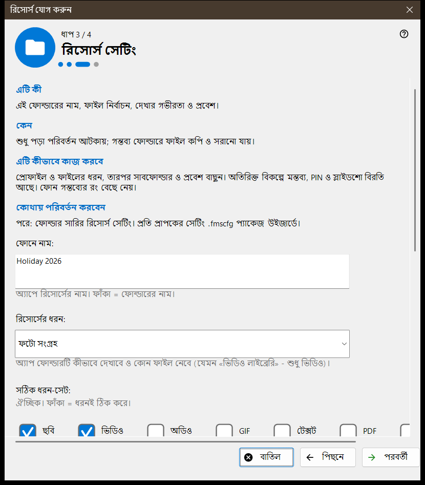
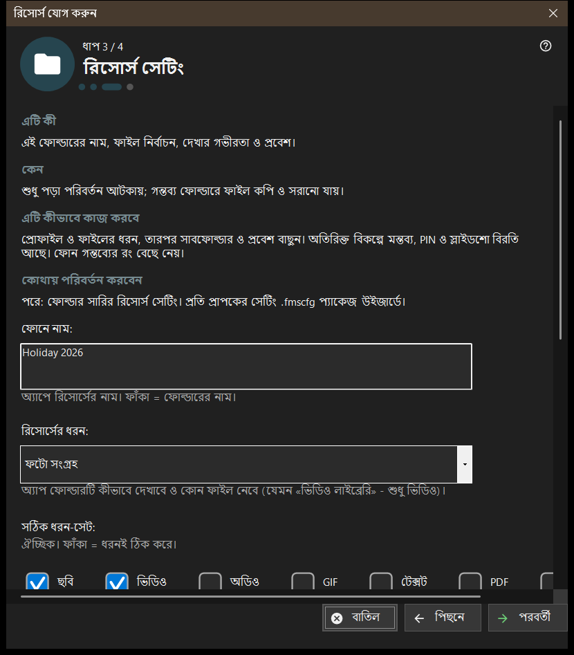

রিসোর্স যোগ করুন
এটি কীসের জন্য
একটি ছোট উইজার্ড যা একটি শেয়ার করা রিসোর্স যোগ করে: একটি ফোল্ডার বা আগে থেকে খোলা একটি FileDO ডিস্ক। এটি যোগ করুন মেনুর রিসোর্স যোগ করার উইজার্ড.. আইটেম থেকে এবং প্রথমবার চালুর প্রবাহ থেকে খোলে, আর রিসোর্সটিকে শেয়ার তালিকায় যোগ করে শেষ হয়।


এই ক্রমে
- রিসোর্স কী তা পড়ুন এবং পরবর্তী চাপুন।
- ফোল্ডার বাছুন.. চাপুন এবং ফোল্ডারটি বাছুন।
- রিসোর্স সেটিং পৃষ্ঠায় নাম, ধরন ও অ্যাক্সেস ঠিক করুন।
- সারসংক্ষেপ দেখে শেষ চাপুন।
- শেষ পৃষ্ঠার বোতাম দিয়ে QR কোড দেখান বা সেটিংস খুলুন।
উপাদানসমূহ
রিসোর্স কী
রিসোর্স হলো একটি ফোল্ডার বা খোলা FileDO ভার্চুয়াল ডিস্ক, যেখানে ভিউয়ার এই পিসির মাধ্যমে পৌঁছায়। ফাইল কম্পিউটারেই থাকে; ফোন সংযোগের মাধ্যমে সেগুলো ব্রাউজ করে ও কপি করে, আর তালিকায় টিক দেওয়া ফোল্ডারটিই পরিবেশিত হয়।
ফোল্ডার বাছুন
ফোল্ডার বাছুন.. পরিচিত ফোল্ডার বাছাই উইন্ডো খোলে এবং FileDO ডিস্ক.. খোলা ডিস্কগুলোর তালিকা দেয়। তালিকায় আগে থেকে থাকা ফোল্ডার এই বার্তায় প্রত্যাখ্যাত হয়: এই ফোল্ডারটি ইতিমধ্যেই তালিকায় আছে। FileDO ডিস্ক আগে থেকে খোলা অবস্থায় বাছুন; উইজার্ড সেগুলো তৈরিও করে না, মাউন্টও করে না।
রিসোর্স সেটিং
ফোনে নাম, ধরন, সঠিক মিডিয়া-সেট, স্ক্যানের শর্ত এবং অ্যাক্সেস। শুধু পঠনযোগ্য পরিবর্তন নিষিদ্ধ করে; গন্তব্য ফোল্ডারে ফাইল কপি ও সরানো যায়। অতিরিক্ত বিকল্পে আছে মন্তব্য, PIN ও স্লাইডশোর বিরতি। গন্তব্যের রং ফোন বেছে নেয়।
রিসোর্স ও পরের পদক্ষেপ
শেষ সেটিং সংরক্ষণ করে এবং রিসোর্স যোগ করে; তার আগে বাতিল করলে কিছুই বদলায় না। শেষ পৃষ্ঠা জানায় রিসোর্সটি পরিবেশিত হচ্ছে কি না। সার্ভার বন্ধ থাকলে ফোন এখনও সেটি দেখতে পায় না; পরিবেশন নিশ্চিত না হলে সেটিং দেখুন। QR কোড দেখান অ্যাক্সেস কোড খোলে, সেটিং.. ম্যানেজারের সেটিংস খোলে, বন্ধ করুন উইজার্ড ছেড়ে যায়।
ম্যানেজার সেটিংস · SFTP শেয়ারিং সেটিংস · এক্সচেঞ্জ সার্ভার সেটিংস